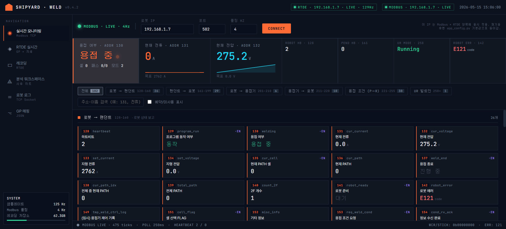
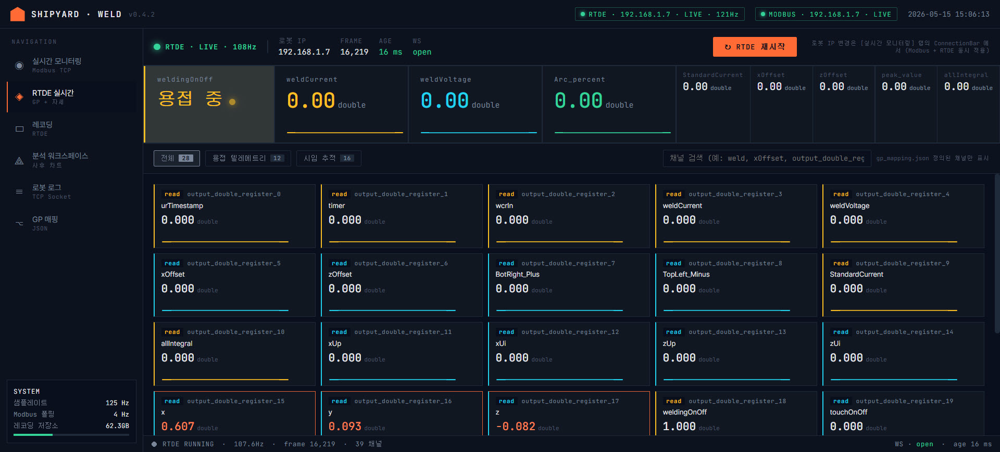
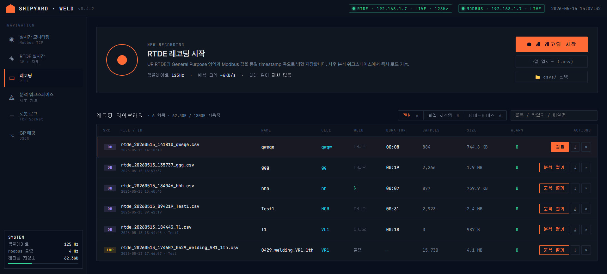
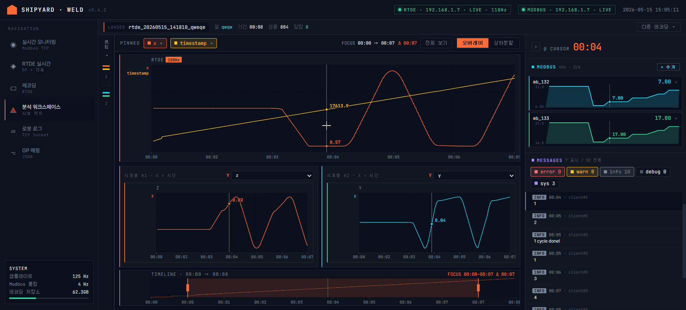
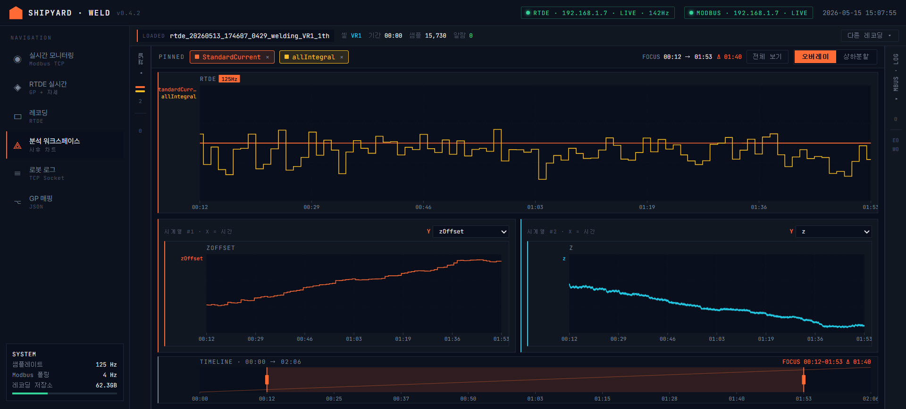
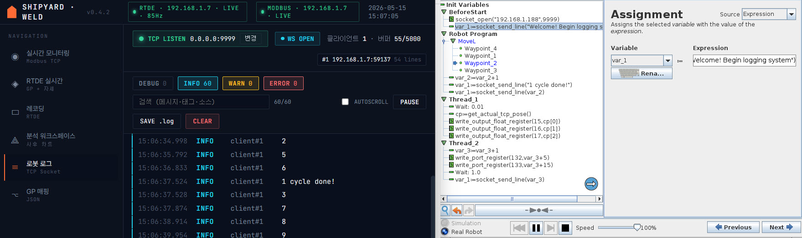
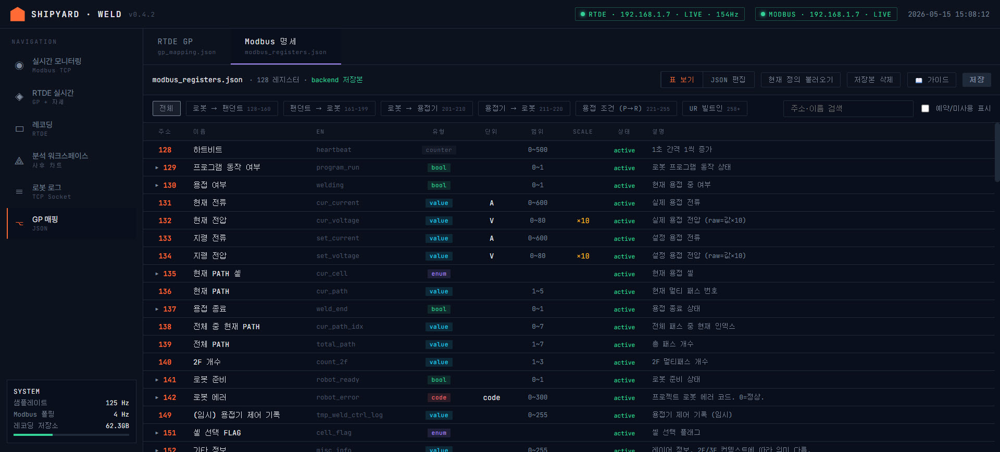

Shipyard Dashboard — 화면 가이드
브라우저에서 http://127.0.0.1:8010 으로 접속한 다음, 왼쪽 사이드바의 6개
아이콘으로 화면을 오갑니다. 처음 보이는 화면은 ◉ 실시간 모니터링 입니다.
화면 한눈에 보기
키 |
화면 |
무엇을 보는가 |
언제 쓰는가 |
|---|---|---|---|
◉ |
실시간 모니터링 |
로봇·펜던트·용접기 사이 통신 |
작업 직전 통신 점검, 운전 중 에러 확인, 로봇 IP 변경 |
◈ |
RTDE 실시간 |
용접 전류·전압·아크율·오프셋 등 실시간 그래프 |
용접이 정상적으로 진행되는지 라이브로 보고 싶을 때 |
▭ |
레코딩 |
과거 용접 데이터 저장·관리 |
한 번의 용접 사이클을 통째로 저장하거나, 동료의 기록을 둘러볼 때 |
⟁ |
분석 워크스페이스 |
저장된 레코딩의 사후 차트 |
한 사이클을 끝낸 뒤 신호들을 비교·검토할 때 |
≡ |
로봇 로그 |
로봇이 흘려보낸 텍스트 로그 |
에러가 났을 때 원인을 좇아갈 때, 시퀀스 진행을 따라갈 때 |
⌥ |
GP 매핑 |
신호 이름 매핑·레지스터 정의 편집 |
새 신호가 추가됐을 때 친숙한 이름을 붙여줄 때 (드물게) |
각 화면 가이드
Note
◈ ~ ⌥ 화면들의 상세 본문은 후속 단계에서 차례로 채워집니다. 우선 ◉ 실시간 모니터링 부터 시작합니다.
1. 실시간 모니터링 ◉
{kind=link}

◉ 실시간 모니터링 — 상단 Connection Bar + Hero KPI + 그룹 탭 + 레지스터 그리드.
목적
용접기·펜던트·로봇 사이에 오가는 모든 신호를 라이브로 봅니다. 이 화면이 “로봇이 켜져 있고 통신이 되는가” 를 보는 가장 먼저 가는 곳 입니다.
화면 구성
위에서 아래로 4영역으로 나뉩니다.
상단 — 연결 표시줄 (Connection Bar)
좌측에 동그란 인디케이터와 글자 (LIVE / STALE / DOWN).
LIVE (녹색) — 최근 신호가 잘 들어오고 있음
STALE (호박색) — 몇 초 사이 신호가 안 들어옴 (네트워크 지연 가능)
DOWN (빨강) — 연결 끊김
오른쪽에 IP : 포트 입력 칸과 Connect 버튼이 있습니다.
Tip
로봇을 바꿀 때 코드 수정 필요 없음. 이 IP 입력만 새 주소로 바꾸고 Connect 누르면, 실시간 모니터링뿐 아니라 RTDE 실시간 화면까지 같은 로봇으로 동시 전환됩니다.
Hero 영역 — 핵심 라이브 KPI
가장 눈에 띄는 큰 박스들. 운전 중에 가장 자주 보게 되는 값들이 모여있습니다.
위치 |
표시 내용 |
의미 |
|---|---|---|
좌측 큰 박스 |
용접 중 / 무부하 |
현재 용접 여부. 옆에 셀(VL1 ~ HOR), 패스(2/3 같은), 모드(자동/수동) 라벨 같이 표시. |
가운데 큰 숫자 1 |
현재 전류 A · 목표 전류 |
실제로 흐르는 용접 전류 + 펜던트가 지령한 값. |
가운데 큰 숫자 2 |
현재 전압 V · 목표 전압 |
실제 전압 + 펜던트 지령 전압. |
우측 작은 박스 4개 |
하트비트·로봇모드·에러 코드 등 |
통신 살아있는지(HB), UR 컨트롤러 상태, 마지막 에러 코드. |
Tip
로봇이 에러를 던지면 우측 작은 박스의 “ROBOT ERR” 가 빨갛게 변하고 코드 번호를
보여줍니다. 예: E121 터치 거리 너무 김 — 원인과 대처 방법은 그 박스를 클릭하면
하단에 펼쳐집니다.
중간 — 그룹 탭 + 검색
신호들이 보내는 방향에 따라 6 그룹으로 묶여있습니다.
그룹 (탭 라벨) |
주소 범위 |
무엇을 봐야 하나 |
|---|---|---|
로봇 → 팬던트 (R→P) |
128 ~ 160 |
로봇이 펜던트에게 보내는 상태 보고 (용접 여부, 전류·전압, 셀, 패스, 에러 등). |
팬던트 → 로봇 (P→R) |
161 ~ 199 |
펜던트가 로봇에 내리는 지시 (작업 모드, 셀 선택, 치수, 옵션 비트 등). |
로봇 → 용접기 (R→W) |
201 ~ 210 |
용접기에 보내는 제어 (토치 ON/OFF, 가스체크, 전류·전압 설정 등). |
용접기 → 로봇 (W→R) |
211 ~ 220 |
용접기가 돌려주는 피드백 (WCR 검출, 실제 전류·전압, 송급 속도 등). |
용접 조건 (COND) |
221 ~ 255 |
펜던트가 보낸 용접 파라미터 (위빙·X/Z 오프셋·각도·시작/끝 조건 등). |
UR 빌트인 (UR) |
258 이상 |
UR 컨트롤러 표준 상태 (Robot mode 등). |
오른쪽에 검색창이 있어서 주소(예: 131) 또는 한글/영문 이름(예: 전류, current)
으로 바로 찾을 수 있습니다.
본문 — 레지스터 그리드
선택된 그룹의 신호들이 격자로 펼쳐집니다. 각 카드는:
주소 번호 + 이름
현재 값 + 단위
작은 스파크라인 (지난 60초 동안의 변화)
좌측에 색 띠 (그룹 색)
카드를 클릭하면 우측에 상세 패널이 열립니다. 거기서 볼 수 있는 정보:
의미(decode) — 예를 들어 비트필드면 비트별 ON/OFF, enum 이면 라벨, 에러 코드면 원인·조치 텍스트.
단위·범위·스케일 — 펜던트가 보낸 값과 실제 값의 환산 규칙.
히스토리 — 최근 약 1분간의 값 추이.
체크박스 “예약/미사용 표시” 를 켜면 작업 시트의 공란(Reserved) 까지 같이 보입니다. 기본은 끔 — 사용 중인 활성 신호만 표시.
자주 하는 일
- 다른 로봇으로 전환하기
상단 IP 입력 → 새 IP 타이핑 → Connect 클릭. 모든 화면이 그 로봇으로 따라 움직입니다 (RTDE 실시간 포함).
- 작업 직전 통신 점검
인디케이터가 LIVE 인지
ROBOT HB / PEND HB 두 작은 박스의 숫자가 1초마다 올라가는지
ROBOT ERR 가 0 인지
- 에러 원인 좇기
ROBOT ERR 박스 클릭 → 우측 상세 패널의 “원인” 과 “조치” 텍스트 확인. 예를 들어
E131 WCR 신호 부재는 “1) 용접기 확인 2) 접지 확인” 처럼 다음 단계가 적혀있습니다.- 특정 셀의 패스 상황 확인
① Hero 의 셀 라벨이 현재 작업 셀(예: VR1) 인지 ② 옆 “패스” 라벨이
2 / 3같이 진행 상태 표시 ③ 더 자세히 보려면 검색창에138(전체 중 현재 PATH) 입력 후 카드 클릭
이런 경우 어떻게 하나
- 모든 값이 0 / 안 변함
인디케이터가 DOWN 또는 STALE 인지부터 확인. DOWN 이면 IP/네트워크 문제, STALE 이면 잠시 기다려보고 그래도 회복 안 되면 Connect 다시.
- 특정 신호만 0 으로 멈춰있음
카드 클릭 → 상세 패널의 “상태(status)” 가 “예약(reserved)” 또는 “미사용(unused)” 인지 확인. 작업 시트상 정의되지 않은 슬롯일 수 있습니다.
- Hero 의 셀 라벨이 비어 있음
펜던트가 아직 셀을 선택하지 않은 상태. 펜던트에서 셀을 고르면 즉시 반영됩니다.
2. RTDE 실시간 ◈
{kind=link}

◈ RTDE 실시간 — Hero Strip(전류·전압·아크율) + 매핑된 GP 채널 카드 그리드.
목적
용접이 진행되는 동안 실제 전류·전압·아크율·시임 오프셋이 어떻게 움직이는지 숫자와 그래프로 동시에 봅니다.
화면 ◉ 와의 차이점: 그쪽은 펜던트·용접기·로봇 사이의 통신 신호 를, 여기는 URScript 가 매 사이클마다 보내주는 측정값 을 봅니다. 그래서 ◈ 의 업데이트 주기가 훨씬 빠르고 (보통 약 100ms 단위), 차트가 자연스럽게 흐릅니다.
화면 구성
상단 — 상태 표시줄
좌측에 LIVE / STALE / DOWN 인디케이터, 가운데에 LIVE · 125Hz 처럼 실제
수신 속도, 우측에 재시작 버튼.
Tip
여기엔 IP 입력 칸이 없습니다. 로봇 IP 변경은 항상 화면 ◉ 실시간 모니터링 의 ConnectionBar 한 곳에서 합니다. 그쪽에서 바꾸면 이 화면의 RTDE 도 함께 따라 움직입니다.
수동 재시작 버튼은 RTDE 만 끊어졌을 때 (◉ Modbus 는 살아있는데 여기만 STALE) 한 번씩 누르는 용도입니다.
Hero Strip — 가장 자주 보는 KPI
상단에 큰 패널 한 줄로 핵심 5종이 묶여있습니다.
위치 |
채널 |
의미 |
|---|---|---|
좌측 큰 박스 |
용접 ON/OFF |
현재 아크 여부. 큰 색깔 라벨로 “용접 중” 또는 “대기”. |
가운데 큰 숫자 1 |
용접 전류 (A) |
URScript 가 보낸 실제 전류값. |
가운데 큰 숫자 2 |
용접 전압 (V) |
실제 용접 전압. |
가운데 큰 숫자 3 |
아크율 (%) |
단위 시간 중 안정 아크 비율. |
우측 작은 박스들 |
기준 전류 · X 오프셋 · Z 오프셋 · Peak 값 · 적분합 |
시임 트래킹 보정 / 안정도 지표. |
각 박스 아래 작은 스파크라인 으로 최근 약 24초의 변화 추이가 함께 보입니다.
탭 + 검색
세 탭으로 채널을 묶어 보여줍니다.
탭 |
색 |
포함 채널 예 |
|---|---|---|
전체 |
회색 |
매핑된 모든 채널을 신호 번호 순으로 한 줄로 보여줌 |
용접 텔레메트리 |
노란색 |
용접 전류·전압, 아크율, 적분합, Peak 값, WCR 입력, 용접 ON/OFF 등 |
시임 추적 |
청록색 |
X/Z 오프셋, X·Z Up/Ui, BR+/TL−, 터치 ON/OFF, Tri count, X/Y/Z 위치 등 |
오른쪽 검색창에 채널 이름(예: arc, 오프셋, BotRight) 일부만 쳐도
실시간으로 카드가 필터링됩니다.
본문 — 채널 카드 그리드
카드 한 장이 신호 하나입니다. 카드에 표시되는 것:
친숙한 이름 (예:
용접 전류· 영문 aliasweldCurrent)현재 값 + 단위 (예:
238.4 A)작은 스파크라인 (최근 약 24초)
좌측 색 띠 (용접/시임 그룹 구분)
클릭하면 우측 패널이 열리고:
큰 차트 — 더 긴 시간축으로 추이를 자세히
현재 값 / 최근 평균 / 최소·최대 같은 요약 숫자
채널 이름과 번호 (
output_double_register_3→용접 전류)
Note
gp_mapping.json 의 alias 가 없는 신호 (예: 로봇 자세, 타임스탬프, raw GP 레지스터) 는 이 화면에 표시되지 않습니다. 매핑되지 않은 신호도 보고 싶다면 ⌥ GP 매핑 화면에서 alias 를 추가하세요. (단, 그 후 대시보드 재시작 필요)
자주 하는 일
- 용접 시작 직전 영점 점검
좌측 큰 박스가 “대기” 인지
용접 전류·전압이 0 근처인지
X / Z 오프셋이 0 또는 직전 보정값에 가까운지
- 용접 중 안정도 확인
Hero 의 아크율(%) 이 흔들리지 않고 일정 수준 유지되는지
용접 전류·전압이 펜던트 지령값 근처에서 안정적으로 진동하는지
적분합(allIntegral) 이 정상 증가 패턴을 보이는지
- 시임 트래킹 보정 확인
“시임 추적” 탭 클릭
X 오프셋이 ±5mm 범위 안인지
BR+ / TL− 두 채널이 균형 잡혀 있는지 (한쪽만 크게 튀면 토치 각도 의심)
X 위치 / Y 위치 / Z 위치 카드로 현재 위치 추적
- 한 채널을 깊게 보기
카드 클릭 → 우측 큰 차트 패널에서 시간축을 길게 봅니다. 평균·최소·최대 숫자도 같이 보여줘서 정상 범위 감을 잡을 때 좋습니다.
이런 경우 어떻게 하나
- 카드가 하나도 안 보인다 (그리드가 비어 있음)
매핑이 안 된 상태입니다.
gp_mapping.json이 누락되었거나 깨져 있을 수 있습니다. ⌥ GP 매핑 화면에서 현재 상태 확인 → 동료 PC 의 파일로 복구.- LIVE 인데 모든 카드의 값이 0
대시보드 ↔ 로봇 RTDE 연결은 살아있지만 URScript 가 register 에 값을 안 채우고 있는 상태입니다. 펜던트에서 용접 프로그램이 실행 중인지 먼저 확인.
- 상단이 STALE / 빨간 점
RTDE 만 끊긴 경우. 상단 우측 재시작 버튼을 한 번 누르거나, ◉ 실시간 모니터링으로 가서 IP 가 맞는지부터 확인하세요.
- 용접은 중인데 좌측 큰 박스가 “대기” 로 표시
weldingOnOff채널(output_double_register_18) 이 URScript 에서 1로 설정되지 않은 경우. URScript 측 매핑 확인 필요.- 카드 너무 많아서 원하는 거 못 찾겠다
“전체” 탭 대신 “용접 텔레메트리” 또는 “시임 추적” 으로 좁히기
검색창에 한글 일부 (
오프셋,전류) 또는 영문 alias 일부 (arc,peak) 입력
3. 레코딩 ▭
{kind=link}

▭ 레코딩 — 라이브러리 + csvs/ 폴더에서 CSV 가져오기 다이얼로그.
목적
한 번의 용접 사이클을 통째로 저장해두고, 나중에 차트로 다시 들여다볼 수 있게 합니다. 라이브 캡처와 외부 CSV 임포트 두 경로가 있고, 저장된 항목은 모두 한 라이브러리에 모입니다.
화면 구성
화면이 두 영역으로 나뉩니다.
상단 — 새 레코딩 / 라이브 레코딩
라이브 레코딩이 진행 중이 아닐 때 는 3가지 시작 카드가 보입니다.
시작 방법 |
용도 |
|---|---|
새 레코딩 |
지금부터 RTDE 신호를 실시간으로 받아 CSV 로 저장. 가장 흔히 쓰는 방법. |
CSV 임포트 |
다른 PC 에서 만든 CSV 파일을 브라우저로 업로드해 라이브러리에 추가. |
경로에서 로드 |
|
라이브 레코딩 중일 때 는 큰 빨간 패널이 떠서:
깜빡이는 LIVE 인디케이터 + 파일명
부제로 NAME · 셀 · 용접 여부
큰 글씨로 경과 시간 (
MM:SS)샘플 수 + 누적 크기 (MB)
캡처 중인 라이브 값 6개 미니 박스
우측 빨간 ■ 정지 및 저장 버튼
하단 — 레코딩 라이브러리
헤더에 “레코딩 라이브러리 · N 항목 · 사용량” 이 표시되고, 그 옆에 필터 탭이 있습니다.
탭 |
보이는 것 |
|---|---|
전체 |
DB·파일 시스템 모두 |
파일 시스템 |
디스크 CSV 만 (DB 에 안 들어간 상태 — 보통 외부에서 떨궈진 파일) |
데이터베이스 |
SQLite 인덱스에 등록된 항목 (라이브 캡처·임포트는 모두 여기로 들어감) |
오른쪽 검색창에서 블록 / 작업자 / 파일명 일부로 즉시 필터링.
각 행에 표시되는 정보 (왼쪽부터)
컬럼 |
의미 |
|---|---|
SRC |
출처 배지. DB (라이브/임포트로 정식 등록) · FILE (디스크에만 있는 CSV) · IMP (외부에서 임포트된 항목) |
FILE / ID |
파일명 + 그 아래 작은 글씨로 시작 시각 / 메모 |
NAME |
레코딩 생성 시 입력한 이름 (예: |
CELL |
작업 셀 (VL1 / VL2 / VR1 / VR2 / HOR) |
WELD |
실제 용접 여부 (예 / 아니오 / 불명) |
DURATION |
캡처 길이 ( |
SAMPLES |
저장된 프레임 수 (125Hz 기준 1분 = 약 7,500) |
SIZE |
파일 크기 |
ALARM |
캡처 동안 발생한 알람 개수 (0 녹색 · 1~5 호박색 · 6+ 빨강) |
ACTIONS |
[분석 열기] / ⤓ 다운로드 / × 삭제 |
새 레코딩 시작 절차
상단의 새 레코딩 카드 클릭 → 메타데이터 다이얼로그
NAME 입력 — 파일명에 그대로 반영됩니다 (예:
12-3F-VL2-test→rtde_20260515_103214_12-3F-VL2-test.csv)셀 입력 (예:
VL2)실제 용접 여부 선택 (예 / 아니오 / 불명) — 통계용
메모 — 작업 조건·관찰사항·이상 징후를 자유롭게. 사후 분석할 때 가장 요긴한 정보입니다.
다이얼로그 하단에 파일명 미리보기 가 실시간으로 떠서 최종 이름 확인 가능
● 시작 → 빨간 라이브 패널로 전환
작업 끝나면 ■ 정지 및 저장 → 라이브러리 첫 줄에 새 항목이 즉시 추가
Tip
NAME 에 사용할 수 없는 문자(공백, 특수기호 등) 는 자동으로 _ 로 바뀝니다.
다이얼로그 하단에 ⚠ NAME 에서 사용 불가능한 문자는 _로 변환됩니다 알림이
뜨면, 미리보기 파일명을 확인하고 원하는 형태인지 점검하세요.
CSV 임포트
다른 PC 에서 만든 CSV 를 가져올 때 두 가지 경로가 있습니다.
- 일반 환경 — 브라우저 업로드
상단 CSV 임포트 → CSV 파일 선택 → NAME·셀·용접 여부·메모 입력 → 추가. 파일은 자동으로
rtde_YYYYMMDD_HHMMSS_<NAME>.csv형식으로 저장됩니다.- 브라우저 업로드가 막힌 환경 — csvs/ 폴더
USB·공유 폴더 등으로 CSV 를 프로젝트 루트의
csvs/폴더에 떨궈둡니다.상단 경로에서 로드 → 그 폴더 목록이 다이얼로그에 뜸
파일 선택 + 메타 입력 → 추가
복사 / 이동 토글로 원본 보존 여부 선택
레코딩 다루기
- 분석 열기
행의 [분석 열기] 클릭 → 화면 ⟁ 분석 워크스페이스 로 자동 전환되며 그 레코딩이 활성화됩니다. 같은 행에서 다시 누르면 “열림” 으로 표시.
- 다운로드
⤓ 클릭 → 브라우저가 즉시 원본 CSV 를 다운로드. 백업·외부 공유용.
- 삭제
× 클릭 → 확인 다이얼로그 → CSV 파일 + 사이드카 + DB 기록 모두 제거되며 되돌릴 수 없습니다.
Warning
라이브 레코딩 중인 파일은 삭제할 수 없습니다 (“현재 라이브 레코딩 중인 파일입니다. 먼저 중지하세요.” 알림). 안전장치입니다.
자주 하는 일
- 용접 1 사이클 캡처
준비 → 새 레코딩 → 메타 입력 → 시작 → 용접 완료 후 정지.
- 과거 레코딩 다시 보기
라이브러리에서 검색창에 셀명·NAME·날짜 키워드 입력 → 분석 열기.
- 문제 레코딩 백업 후 정리
알람 개수가 빨간 항목 → ⤓ 다운로드로 외부 보관 → × 로 삭제.
- 다른 PC 로 옮긴 파일 가져오기
같은 PC 라면 CSV 임포트 한 번. 보안 환경이라면 USB로
csvs/에 넣고 경로에서 로드.
이런 경우 어떻게 하나
- ■ 정지 및 저장 후 라이브러리 첫 줄에 항목이 안 보임
잠시 후 새로고침 또는 화면 전환 후 복귀. 정상이면 즉시 보입니다. 그래도 없으면 RTDE 가 STALE 상태였는지 (◈ 화면) 점검 — 정지 시점 직전까지 프레임이 안 들어왔으면 빈 캡처일 수 있습니다.
- 캡처는 됐는데 SAMPLES 가 0
RTDE 연결 자체는 살아있었지만 URScript 가 register 에 값을 안 채웠거나 프로그램 미실행 상태. ◈ 화면에서 값이 흐르고 있는지 먼저 확인.
- 다운로드 버튼을 눌렀는데 응답 없음
해당 행의 SRC 가 FILE 인데 실제 디스크에서 파일이 사라진 경우.
×로 행을 정리하세요.- ×를 누르면 “현재 라이브 레코딩 중” 오류
해당 파일이 지금 캡처 중인 파일과 같다는 뜻. 먼저 ■ 정지 및 저장 후 다시 삭제 시도.
4. 분석 워크스페이스 ⟁
{kind=link}

⟁ 분석 워크스페이스 — 좌측 변수 브라우저 + 큰 차트 + 두 산점도 + Brush Timeline.
{kind=link}

사용자 템플릿 “Z 아크센싱” 을 적용한 상태 — 한 번 만들어두면 다른 레코딩에서도 한 번에 같은 차트.
목적
화면 ▭ 에 저장된 레코딩 한 건을 통째로 열어 시간축 차트 와 X·Y 상관관계 산점도 로 들여다봅니다. 같은 분석을 반복할 때를 위해 차트 구성을 템플릿 으로 저장해두면, 다음 레코딩에서 한 번 클릭으로 동일한 그림을 띄울 수 있습니다.
이 화면은 라이브 데이터를 보지 않습니다. 어디까지나 이미 저장된 CSV 를 대상으로 한 사후 분석입니다.
화면 진입
두 가지 경로:
화면 ▭ 레코딩 의 라이브러리 행에서 [분석 열기] 클릭 → 자동으로 ⟁ 화면 + 그 레코딩 활성화
좌측 사이드바의 ⟁ 아이콘 직접 클릭 → 이전에 마지막으로 본 레코딩 자동 로드
레코딩이 하나도 없으면 안내 화면이 떠서 ▭ 로 이동을 권유합니다.
화면 구성
상단 — 로드된 레코딩 바
현재 분석 중인 파일 이름·메모·날짜가 표시되고, ▾ 다른 레코딩 버튼을 누르면 라이브러리 전체에서 다른 항목을 빠르게 골라 전환할 수 있습니다.
좌측 사이드바 (260px) — 변수 브라우저
이 CSV 에 들어있는 모든 채널 목록이 표시됩니다. 각 채널을 클릭해서 PINNED 에 추가/제거. 최대 6개까지 핀할 수 있고, 핀된 채널은 가운데 큰 차트와 BrushTimeline 에 색깔별로 같이 그려집니다.
가운데 — PINNED 칩 + 표시 모드
좌측에 현재 핀된 채널들이 색칠된 칩으로 나열되고, 우측에 표시 모드 토글:
모드 |
차트 형태 |
|---|---|
오버레이 |
핀된 채널들을 같은 차트에 색깔별로 겹쳐서 그림. 상관관계 시각적으로 비교할 때. |
상하분할 |
각 채널을 위아래로 분리된 작은 차트로. 단위·스케일이 다른 채널을 비교할 때. |
큰 차트 — FOCUS
가운데 메인 영역. 현재 시간 범위(FOCUS · 00:12 → 00:47 Δ 00:35) 가 헤더에
표시되고, 위에서 정한 모드로 차트가 그려집니다.
상단 우측 두 버튼:
전체 보기 — 시간 범위를 0 ~ 끝 전체로
이벤트 윈도우 — 사이클 중반(55%~82%) 으로 빠르게 점프. 보통 아크가 안정화된 구간을 보고 싶을 때.
X · Y 상관관계 #1 / #2 — 산점도 두 개
큰 차트 아래 좌·우 두 개의 산점도. 각 산점도 헤더에서 X 변수 와 Y 변수 를 따로 골라서 두 페어를 동시에 비교할 수 있습니다.
특수 변수 __timer__ 는 “시간축” 을 뜻합니다. 예를 들어 X=``__timer__``,
Y=``xOffset`` 으로 두면 시간에 따라 X 오프셋이 어떻게 보정되는지가 산점도로
보입니다.
Tip
두 산점도를 동시에 쓰는 전형적인 패턴:
#1:
BotRight_PlusvsTopLeft_Minus(두 raw 신호의 상관관계)#2:
__timer__vsxOffset(보정값의 시간 추이)
이러면 입력 두 신호가 어떻게 출력 한 오프셋으로 합쳐지는지 한 눈에 보입니다.
하단 — Brush Timeline
전체 사이클을 작은 그래프로 보여주고, 그 위에 드래그 가능한 시간 윈도우 가 있습니다. 이 윈도우가 위의 모든 차트(큰 차트 + 산점도 두 개) 의 표시 범위를 결정합니다.
가장자리를 드래그 → 윈도우 좌우 끝 조정
한가운데를 드래그 → 윈도우 통째로 이동
호버 → 위쪽 모든 차트에 십자선이 같은 시점으로 동기화 (값 비교)
템플릿 — 차트 구성 저장/적용
가운데 영역 맨 위에 템플릿 바 가 있습니다. 한 번 좋은 조합을 찾으면 그 “pinned 채널 + 산점도 X·Y 페어 + 표시 모드” 묶음을 통째로 저장해두고, 다음 레코딩에 같은 조합을 한 번에 적용할 수 있습니다.
기본으로 두 개의 내장 템플릿 이 있습니다:
이름 |
핀된 채널 |
산점도 |
|---|---|---|
X 아크센싱 |
|
#1: 시간 vs |
Y 아크센싱 |
|
#1: 시간 vs |
여기에 사용자가 자유롭게 본인의 템플릿을 추가합니다.
새 템플릿 저장하기
원하는 채널을 좌측 변수 브라우저에서 핀
산점도 #1, #2 의 X·Y 변수 선택
표시 모드 (오버레이 / 상하분할) 결정
템플릿 바 우측의 💾 현재 저장 클릭
다이얼로그에서 이름 과 설명 입력 → 저장
즉시
analysis_templates.json파일에 추가되며 동료 PC 에도git pull후 바로 보입니다.
템플릿 적용하기
템플릿 바의 드롭다운에서 이름 클릭 → 그 순간 핀·산점도·모드 모두 한꺼번에 바뀝니다.
Note
템플릿이 참조하는 채널이 현재 레코딩에 없으면 그 채널만 조용히 건너뜁니다.
“X 아크센싱” 템플릿을 적용했는데 핀이 비어 있다면, 이 레코딩에 BotRight_Plus /
TopLeft_Minus 채널이 캡처되지 않았다는 뜻입니다.
템플릿 삭제하기
드롭다운에서 항목 우측의 × 클릭. 사용자 템플릿이든 내장이든 동일하게 사라집니다 (내장은 “다음에 보이지 않게” 처리되는데 사용자 관점에선 똑같이 “삭제” 입니다). 다시 보이게 하려면 같은 이름으로 새 템플릿을 저장하면 됩니다.
자주 하는 일
- 한 사이클의 안정성 검토
큰 차트에
weldCurrent,weldVoltage,Arc_percent를 핀이벤트 윈도우 클릭 (아크 안정 구간 자동)
산점도 #1 을 시간 vs
Arc_percent로 두고 진동 폭 확인
- 시임 트래킹 보정 검토
좌측 변수 브라우저에서
BotRight_Plus,TopLeft_Minus,xOffset핀모드를 상하분할 로 (단위가 달라서)
산점도 #1 =
BotRight_PlusvsTopLeft_Minus, #2 = 시간 vsxOffset또는 그냥 템플릿 “X 아크센싱” 한 번 클릭
- 문제 구간 좁히기
전체 보기 클릭 → 사이클 전체 차트 확인
Brush Timeline 에서 의심 구간으로 윈도우 드래그
윈도우 폭을 좁히면 큰 차트와 산점도 모두 그 구간만 줌인
호버해서 각 시점의 정확한 값 읽기
- 같은 분석을 다음 레코딩에 그대로
첫 레코딩에서 좋은 조합 만들고 → 💾 현재 저장 으로 템플릿화 → 다음 레코딩 ▭ 에서 [분석 열기] → 템플릿 드롭다운에서 이름 클릭. 끝.
이런 경우 어떻게 하나
- 열었는데 “데이터 없음” / 빈 차트
레코딩 CSV 가 비어 있거나 (캡처 도중 RTDE 끊김) 컬럼명이 깨진 경우. ▭ 에서 해당 행의 SAMPLES 가 0 이면 캡처 자체에 문제가 있던 것.
- 좌측 변수 브라우저에 채널이 너무 적음
이 레코딩 시점에
ROBOT_FIELDS가 좁게 설정되어 있었을 가능성. 또는 외부 임포트된 CSV 라 다른 컬럼 체계를 가질 수 있습니다.- 템플릿 적용했는데 PINNED 가 비어 있음
그 템플릿이 참조하는 채널들이 현재 레코딩에 모두 없다는 뜻. ⌥ GP 매핑 화면 에서 채널 이름을 확인하거나, 다른 레코딩에서 시도해보세요.
- 산점도가 한 점에 몰려있음
X 또는 Y 변수의 값이 일정 구간 동안 거의 안 변한 상태. Brush Timeline 으로 다른 시간 윈도우를 골라보세요.
- 호버해도 십자선이 안 따라옴
브라우저 줌이 100% 가 아니거나, 마우스가 차트 영역 밖에 있는 경우. 한 번 차트 가운데를 클릭한 후 호버해보세요.
5. 로봇 로그 ≡
{kind=link}

≡ 로봇 로그 — 상단 상태(LISTENING/WS/연결된 클라이언트) + 도구 모음 + 라이브 라인 목록.
목적
로봇이 URScript 안에서 출력하는 텍스트 로그를 라이브 텍스트 스트림 으로 보고,
필요할 때 .log 파일로 내려받습니다. 에러 발생 시 원인을 좇거나, 시퀀스 진행
(터치 → 셀 선택 → 용접 시작 → 패스 전환 …) 을 한 줄씩 따라갈 때 사용합니다.
동작 방식 (한 줄 요약)
이 화면은 로봇이 대시보드 PC 쪽으로 TCP 접속해 한 줄씩 흘려보내는 구조입니다. 대시보드를 띄우면 자동으로 서버가 같이 떠 있고, 로봇 URScript 가 그 주소·포트로 접속하기만 하면 그 순간부터 모든 라인이 이 화면에 흘러나옵니다.
화면 구성
상단 — 상태 바
세 종류의 상태를 보여줍니다.
항목 |
의미 |
|---|---|
LISTENING |
대시보드 PC 가 해당 포트(기본 9999) 에서 로봇 접속을 받을 준비가 됐는지. 녹색이면 OK. 빨강이면 포트 점유 충돌 등 바인드 실패. |
WS |
대시보드 ↔ 화면의 실시간 전달 채널 상태. 끊기면 자동 재연결. |
연결된 클라이언트 |
지금 접속해서 로그를 흘려보내고 있는 로봇 IP 목록 (보통 1개). |
우측의 편집 버튼으로 host : port 를 즉시 변경할 수 있습니다. 다른 포트로
바꾸려면 로봇 URScript 쪽 설정도 같은 값으로 맞춰야 합니다.
가운데 — 도구 모음
도구 |
동작 |
|---|---|
검색창 |
메시지·소스·태그에 일부 일치하는 라인만 표시 (실시간 필터링) |
level 필터 |
debug / info / warn / error 각각 켜고 끔. 각 라벨 옆에 누적 개수 |
▶ / ❚❚ |
일시정지 토글. 잠시 멈춰서 살펴볼 때. 멈춘 동안 들어온 라인은 옆에 |
자동 스크롤 |
새 라인이 들어오면 항상 맨 아래로. 위로 스크롤하면 자동으로 꺼짐 (살펴보는 중으로 간주) |
🗑 비우기 |
서버 버퍼와 화면을 동시에 비움. 확인 다이얼로그 있음 |
⤓ 다운로드 |
현재까지의 모든 라인을 |
오른쪽에 shown / total 으로 “현재 보이는 라인 / 누적 라인” 표시.
본문 — 로그 라인 목록
라인 한 줄에 표시되는 것:
시각 (예:
14:23:51.847)LEVEL 색깔 배지 — debug(회색) / info(청록) / warn(호박) / error(빨강)
source — 로봇이 라인을 보내며 같이 첨부한 출처 라벨 (예:
main,touch)메시지 본문 — 검색어가 있으면 그 부분만 하이라이트
자동 스크롤이 켜져 있으면 새 라인이 들어올 때마다 맨 아래로 스크롤. 사용자가 위로 한 번 올리면 자동 스크롤이 꺼져서 그 자리에서 살펴볼 수 있습니다. 다시 바닥 근처로 내려가면 자동 스크롤이 재개됩니다.
자주 하는 일
- 로봇이 켜져 있는지 확인
≡ 화면 진입
상단 LISTENING 이 녹색인지, 연결된 클라이언트 목록에 로봇 IP 가 있는지
아래 텍스트 영역에 라인이 들어오고 있는지
- 에러 원인 좇기
에러가 발생한 직후 ❚❚ 일시정지
위로 스크롤해서 에러 라인 + 그 직전 몇 줄을 함께 읽기
error 만 켜고 다른 level 끄면 빠르게 추려짐
⤓ 다운로드로 외부 공유
- 특정 작업만 보기
검색창에 셀명(
VL2), 작업명(touch), 패스 번호 등 키워드 입력 → 실시간 필터링됨. 필터 켠 상태로 새 라인이 들어오면 즉시 반영.- 디버깅 시 상세 보기
기본으로 debug 는 꺼져 있습니다. 평소 노이즈를 줄이기 위함. 자세히 들여다볼 때만 debug 도 켜세요.
- 로그를 동료에게 공유
⤓ 다운로드 → 받은
.log파일을 메신저나 메일로 전달. 시각·level·source· 메시지가 모두 텍스트로 포함되어 있어 그대로 읽을 수 있습니다.
이런 경우 어떻게 하나
- LISTENING 이 빨강 (바인드 실패)
다른 프로그램이 같은 포트를 점유 중일 가능성이 큽니다. 상단 편집 으로 다른 포트(예: 9998) 로 바꿔보거나,
netstat -ano | findstr :9999로 점유 중인 프로세스 확인 후 종료.- LISTENING 은 녹색인데 연결된 클라이언트 없음
로봇 URScript 쪽이 아직 접속을 시도하지 않은 상태. 펜던트에서 프로그램이 실행 중인지, 그 프로그램의 socket_open 인자가 이 화면 상단의 host/port 와 일치하는지 확인.
- 라인이 한 번에 너무 많이 쏟아짐
❚❚ 로 일시정지 후 차분히 살펴봅니다. 또는 level 필터에서
info까지 꺼서warn/error만 보기. URScript 측에서도 너무 빈번한 debug 출력은 줄이는 게 좋습니다.- 자동 스크롤이 계속 꺼짐
화면 안에서 살짝 스크롤만 해도 자동 스크롤이 꺼집니다. 자동 스크롤 체크 박스를 직접 다시 켜거나, 라인 목록의 맨 아래까지 내려가면 자동 재개됩니다.
- 한글이 깨져 표시
URScript 측에서 라인을 보낼 때 UTF-8 인코딩이 아닐 가능성이 큽니다. 로봇 측
socket_send_line호출부에서 인코딩 확인 필요.
6. GP 매핑 ⌥
{kind=link}

⌥ GP 매핑 — Modbus 명세 탭의 표 보기. 각 행이 한 레지스터, 우측에 JSON 편집 모드 토글.
목적
다른 화면들에 등장하는 친숙한 이름·단위·디코딩 규칙을 직접 편집하는 관리자용 화면입니다. 평소 작업에서는 거의 들를 일이 없고, 보통 다음 상황에서만 엽니다.
URScript 쪽에서 새 GP 신호를 추가했을 때 → 친숙한 이름 붙이기
Modbus 레지스터에 새 주소가 추가됐을 때 → 의미·단위·비트 정의 적기
단위 또는 라벨이 실제와 안 맞아서 수정할 때
Warning
이 화면은 대시보드 전체의 표시 규칙을 직접 바꿉니다. 잘못 저장하면 다른 화면이 채널 0개로 빈 채로 보이거나 라벨이 깨질 수 있습니다. 수정 전에 git 으로 현재 상태를 한 번 커밋해두는 것을 권장합니다.
화면 구성
상단 탭 — 두 종류의 매핑
화면 위쪽에 두 탭이 있습니다.
탭 |
파일 |
영향 화면 |
|---|---|---|
RTDE GP |
|
◈ RTDE 실시간 — GP 신호 친숙명·라벨·단위 |
Modbus 명세 |
|
◉ 실시간 모니터링 — 레지스터 의미·비트 디코딩·valueMap |
각 탭 안에 두 보기 모드
같은 데이터를 두 방식으로 다룹니다.
모드 |
용도 |
|---|---|
표 보기 |
한 행 = 한 신호. 검색창으로 원하는 신호 찾고 한 눈에 확인. 읽기 좋음. |
JSON 편집 |
원본 텍스트 에디터. 항목을 추가·삭제하거나 디코딩 규칙을 직접 손볼 때. |
표 보기에서 빠른 확인을 하고, 실제 수정은 JSON 편집 모드에서 하는 흐름이 일반적입니다.
상태 표시
각 탭 상단에 현재 출처가 표시됩니다.
BACKEND — 백엔드 파일에 저장된 정의를 불러온 상태
LOCAL — 아직 저장된 파일이 없거나 못 읽어서 프론트엔드 기본값을 표시 중
처음 PC 에서는 modbus_registers.json 이 없을 수 있고, 이때 LOCAL 로
표시됩니다. 한 번 저장 누르면 파일이 생기며 BACKEND 로 바뀝니다.
RTDE GP 탭 — 친숙명 매핑
각 행 한 줄에 표시되는 것:
필드 |
예시 |
의미 |
|---|---|---|
register |
|
URScript 가 채워주는 RTDE GP 슬롯 이름 |
col |
|
친숙한 영문 alias (다른 화면의 식별자) |
label |
|
화면에 보여줄 한글 라벨 |
unit |
|
단위. 카드의 숫자 옆에 그대로 붙음 |
scale |
|
원본값에 곱할 배율. 보통 1.0, 펜던트가 보낸 raw 가 ×10 인 경우 |
신호 하나 추가하기
예: URScript 가 새로 output_double_register_32 에 와이어 송급 속도를
0~20 m/min 범위로 채우기 시작했다고 가정.
RTDE GP 탭 → JSON 편집 모드
mapping배열 마지막에 한 항목 추가:{ "register": "output_double_register_32", "col": "wireSpeed", "scale": 1.0, "label": "와이어 송급 속도", "unit": "m/min" }우상단 저장 클릭 →
{"saved": true, ...}응답이 잠깐 표시되면 성공대시보드를 재시작 합니다 (PowerShell
Ctrl + C→python run_shipyard.py)다시 접속하면 ◈ RTDE 실시간 화면에 “와이어 송급 속도 m/min” 카드가 새로 보임
Note
◈ 화면은 매핑에 정의된 채널만 표시합니다. output_double_register_32 에
값이 들어와도 매핑이 없으면 화면에 안 나옵니다. 매핑 화면에서 친숙명을 붙여줘야
비로소 보입니다.
Modbus 명세 탭 — 레지스터 정의
이 탭은 RTDE GP 보다 항목이 훨씬 풍부합니다. 한 항목에 들어가는 키:
키 |
예시 |
의미 |
|---|---|---|
|
|
Modbus 주소 |
|
|
한글 표시명 |
|
|
영문 alias |
|
|
어느 그룹에 묶일지 (탭 분류) |
|
|
단위 |
|
|
디코딩 종류. valueMap·bits·packed 등이 함께 쓰임 |
|
|
정상 범위 |
|
|
현재 사용 여부 |
|
|
enum 디코딩 — 값 → 라벨 |
|
|
비트필드 디코딩 |
|
|
에러 코드별 원인/조치 텍스트 — ◉ 실시간 모니터링의 카드 클릭 시 펼쳐짐 |
여기는 변경하면 즉시 modbus_registers.json 파일에 저장되고, 다른 PC 도 같은
정의로 시작 합니다 (git 으로 공유).
저장과 반영 시점
탭에 따라 반영 시점이 다릅니다.
탭 |
저장 시점 동작 |
반영 시점 |
|---|---|---|
RTDE GP |
파일이 |
대시보드 재시작 후 ◈ 화면에 반영 |
Modbus 명세 |
파일이 |
브라우저 페이지 새로고침 후 ◉ 화면에 반영 |
Tip
저장 후 응답에 mapping_count 또는 register_count 가 함께 뜨므로, 의도한
개수만큼 들어갔는지 한 번 더 확인할 수 있습니다.
기본값으로 되돌리기
탭 우상단의 재설정 버튼을 누르면:
RTDE GP 탭 →
gp_mapping.json파일 자체가 삭제됩니다. 다음 부팅 시 대시보드는 매핑 없는 상태로 시작 (모든 GP 신호가 raw 이름으로 표시).Modbus 명세 탭 →
modbus_registers.json이 삭제되고, 페이지 새로고침 후 프론트엔드 하드코딩 기본값(약 128개 정의) 으로 돌아갑니다.
Warning
재설정은 확인 다이얼로그 없이 즉시 실행 됩니다. git 커밋이 안 된 변경사항은 복구가 어렵습니다. 신중하게 사용하세요.
자주 하는 일
- 새 GP 신호에 친숙명 붙이기
RTDE GP 탭 → JSON 편집 →
mapping배열에 항목 추가 → 저장 → 대시보드 재시작.- Modbus 레지스터의 라벨이 실제 펜던트 표기와 다름
Modbus 명세 탭 → 표 보기 검색에서 주소 입력 → JSON 편집으로 전환해
name필드 수정 → 저장 → 페이지 새로고침.- 에러 코드에 새 항목 추가
Modbus 명세 탭 → 주소
142(로봇 에러) 검색 → JSON 편집에서errorMap에 새 코드 추가 (name,cause,action세 필드) → 저장 → 새로고침. 이후 ◉ 화면에서 그 에러 발생 시 새 텍스트가 펼쳐집니다.- 매핑이 깨졌을 때 동료 파일로 복구
동료의
gp_mapping.json/modbus_registers.json을 자기 프로젝트 루트에 덮어쓴 후 대시보드 재시작 또는 페이지 새로고침. 또는git checkout으로 마지막 커밋 상태로 복원.- 변경사항을 동료에게 공유
git status로 변경된 파일 확인git add gp_mapping.json modbus_registers.jsongit commit -m "GP 매핑: wireSpeed 추가"처럼 의미 있는 메시지git push
동료는
git pull후 대시보드 재시작/새로고침 한 번이면 즉시 같은 정의로 시작.
이런 경우 어떻게 하나
- 저장 버튼을 눌렀는데 “invalid JSON: …” 빨간 메시지
JSON 문법이 깨졌습니다. 마지막 쉼표, 큰따옴표, 중괄호 짝 등을 확인하세요. JSON 편집기 상단에 줄 번호와 함께 오류 위치가 표시됩니다.
- 저장 후 ◈ 화면에 새 신호가 안 보임
대시보드 재시작 했는지 확인. RTDE GP 매핑은 부팅 시점에만 적용 되어서 페이지 새로고침만으로는 반영되지 않습니다.
- 저장 후 ◉ 화면이 빈 채로 보임
modbus_registers.json에registers배열이 비어 있거나 깨진 상태로 저장된 경우. 재설정 으로 파일을 삭제하면 프론트엔드 하드코딩 기본값으로 돌아갑니다.- 탭 상태가 LOCAL 인데 저장이 안 됨
백엔드와 통신이 안 되는 경우. 대시보드가 실제로 떠 있는지 (PowerShell 창), 브라우저 주소가
http://127.0.0.1:8010인지 확인.- 다른 PC 에서 같은 매핑인데 다르게 보임
git pull이 안 됐거나, 그 PC 에서 임시로 매핑을 수정했을 수 있습니다. 해당 PC 에서git status로 변경 여부 확인.
설정 파일 한눈에 보기
이 셋만 깃에 같이 올려두면, 동료 PC 에서도 같은 매핑·정의·템플릿으로 시작합니다.
파일 |
영향 화면 |
어떻게 바꾸나 |
|---|---|---|
|
RTDE 실시간, GP 매핑 |
GP 매핑 화면에서 편집 → 저장 → 대시보드 재시작 |
|
실시간 모니터링, GP 매핑 |
GP 매핑 화면에서 편집 → 저장 → 페이지 새로고침 |
|
분석 워크스페이스 |
분석 워크스페이스에서 템플릿 저장 → 즉시 반영 |